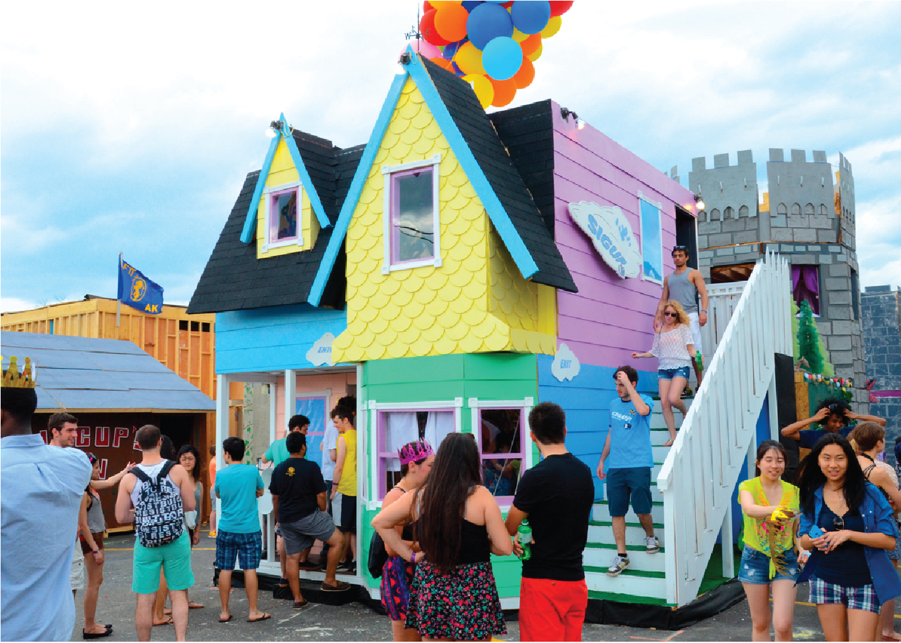

CMU Spring Carnival Committee 2016
Team
- Ronnie Ghose
- Israel Madueme
- Kunal Sinha
Opportunity
Our project was unique in that it has two types of problems for our team to target. Firstly, our client already had a working application (Binder) that helps streamline their core business process (i.e. Spring Carnival booth administration). In order to meet their new business needs, they needed a more robust feature set to solve problems. The second type was an organizational one - the opportunity to explore regions of the organization that did not yet have a technology plan in place in order to further reduce the load on the Spring Carnival executive committee. Our client made a great effort to detail many issues they had with the application and new features that would be desirable.
Outcomes
Throughout the course of the project our team and our client were very diligent about tracking what we worked on using GitHub issues. We are happy to say that at the conclusion of the project our team resolved over 30 issues! The main features we created include a more streamlined tool checkout process, new reporting features to pull information out of Binder, a easier method for communicating between coordinators in the app itself, and many bug fixes. We are confident that our changes were a part of the improved productivity our client saw during Spring Carnival 2017.
Deliverables
Our client has an existing repository on GitHub (https://github.com/sc0v/binder-app/) and all of our code contributions have been pushed there via pull requests. In addition, our client pioneered the deployment process and so they already have the tools and information needed to deploy the application to their Campus Cloud VM.